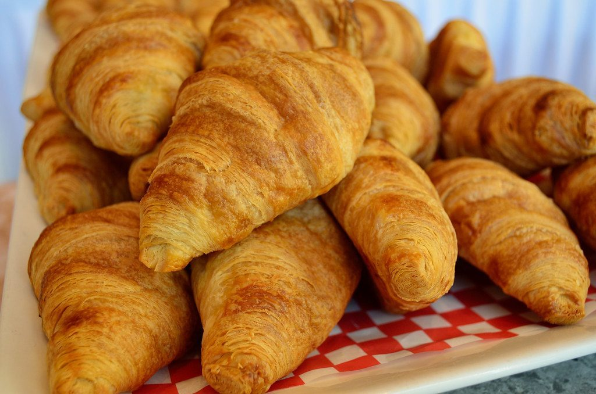
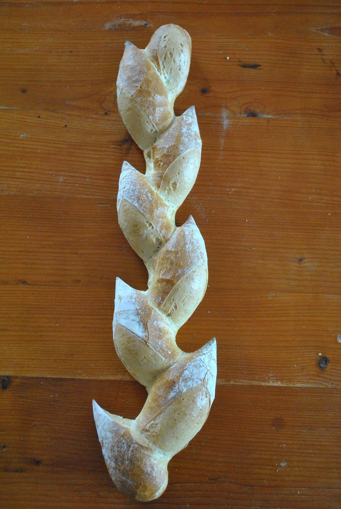
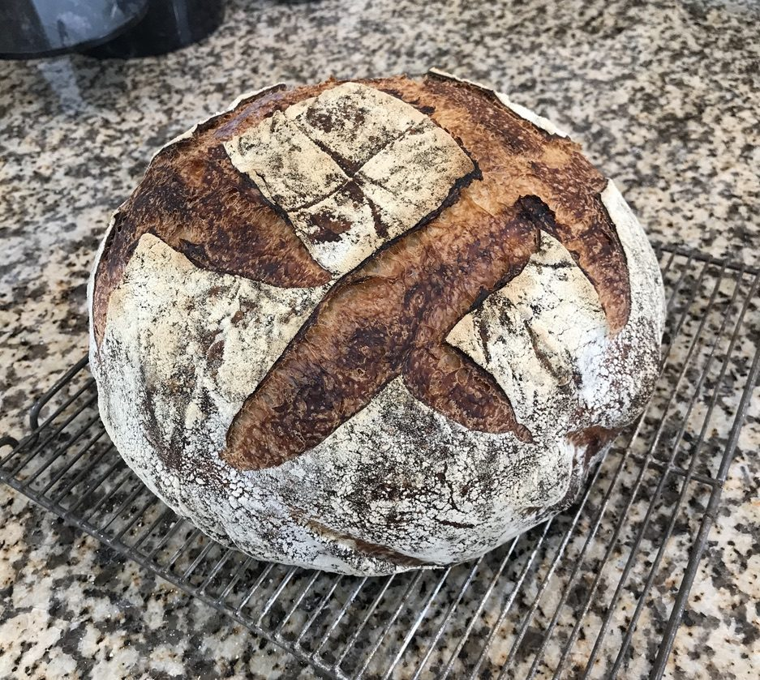
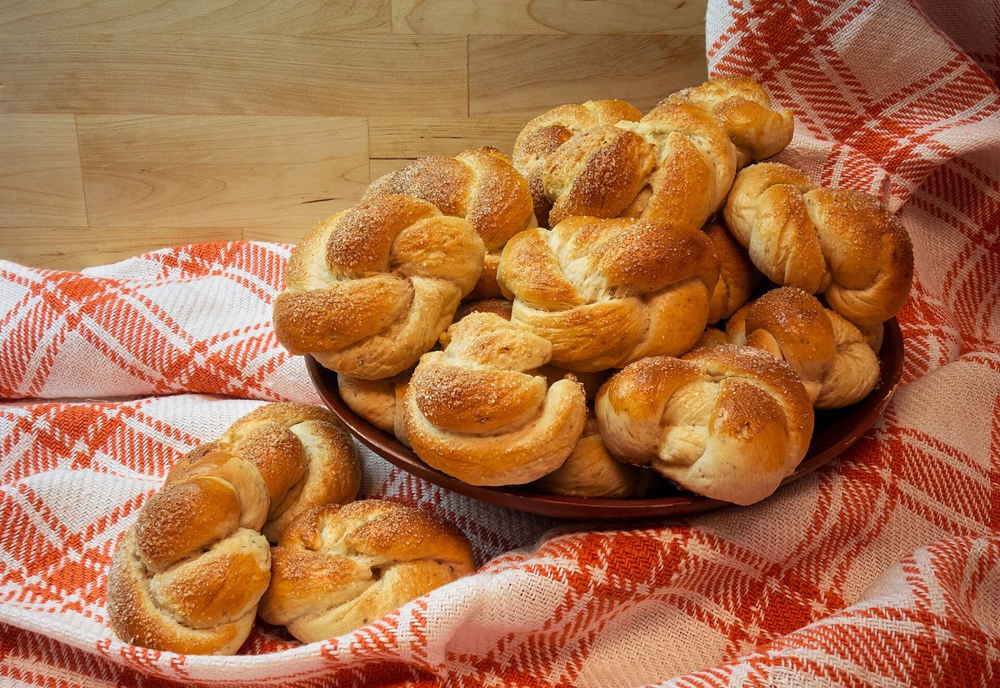
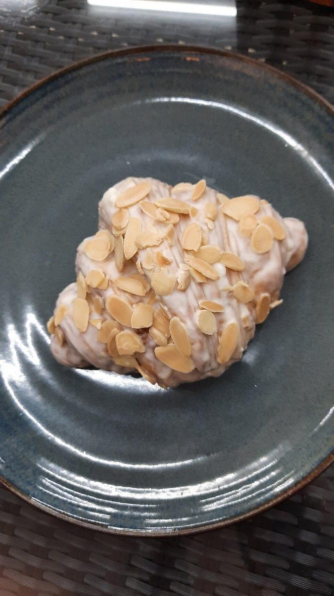

ベーカリー / 栃木県宇都宮市
パン屋カトルカール
栃木県宇都宮市白沢町にあるパン屋「カトルカール」のご案内ページです。営業時間やメニューなど、詳しいことは準備中。電話は 028-307-9834、Instagramもご覧ください。

制作側の連想
「回る木馬の番号札」で並べてみる
「カトルカール」はフランス語で「4分の4」を意味する言葉ですが、お店の名前の由来は分かりません。制作側は、遊園地の回転木馬(メリーゴーラウンド)を連想しました。一本の柱のまわりを、番号のついた木馬がぐるりと並ぶ姿です。このサイトでは、写真を木馬に見立てて「1番」「2番」と番号札をつけて並べています。制作側の連想で、お店の理念・由来とは無関係です。
木馬の乗り場(写真はすべてイメージ)
1番から6番まで、パンのいろいろ。
写真はお店のものではなく、国外または撮影地不明のフリー素材です。お店の商品を写したものではありません。
- 1

細長いパンが重なる(イメージ) 1番 細長いパン
- 2

穂の形に切れ目を入れたパン(イメージ) 2番 穂の形のパン
- 3

十字の切れ目が入った丸いパン(イメージ) 3番 丸いパン
- 4

ねじって結んだ形の小さなパン(イメージ) 4番 結んだ形のパン
- 5

皿にのった焼き菓子パン(イメージ) 5番 焼き菓子パン
- 6

黒っぽい丸いパンと薄焼きのパン(イメージ) 6番 黒っぽいパン
ご案内
お店のこと(確認できたものだけ)
| 所在地 | 〒329-1102 栃木県宇都宮市白沢町341-2 |
|---|---|
| 電話 | 028-307-9834 |
| 営業時間 | 準備中 |
| 定休日 | 準備中 |
| ご予約 | 準備中 |
| 駐車場 | 準備中 |
| SNS | Instagram @quatre_quart |